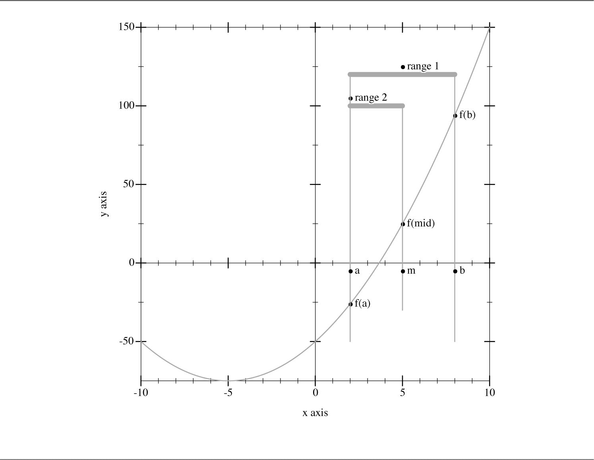
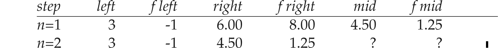
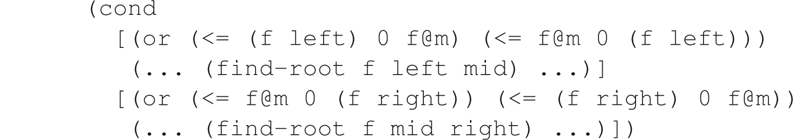
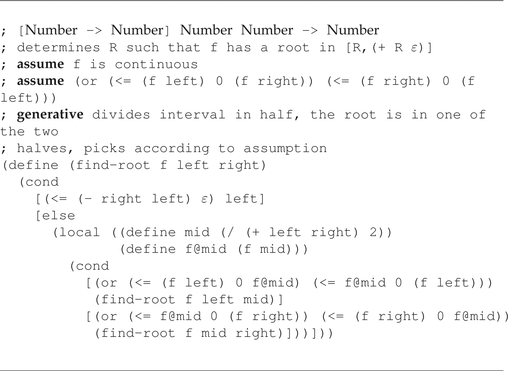
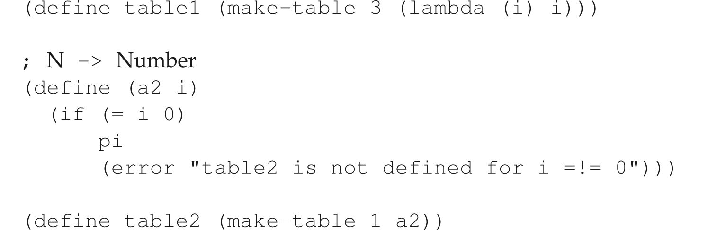

27.2 Binary Search
Applied mathematicians model the real world with nonlinear equations and then try to solve them. Specifically, they translate problems into a function f from numbers to numbers and look for some number r such that
The value r is called the root of f.
Here is a problem from the physical domain:
Sample Problem A rocket is flying at the constant speed of v miles per hour on a straight line toward some target, d0 miles away. It then accelerates at the rate of a miles per hour squared for t hours. When will it hit its target?
Physics tells us that the distance covered is the following function of time:
The question of when it hits the target asks us to find the time t0 such that the object reaches the desired goal:
From algebra we know that this is a quadratic equation and that it is possible to solve such equations if d0, a, and v satisfy certain conditions.
Generally such problems call for more complexity than quadratic equations. In response, mathematicians have spent the last few centuries developing root-finding methods for different types of functions. In this section, we study a solution that is based on the Intermediate Value Theorem (IVT), an early result of analysis. The resulting algorithm is a primary example of generative recursion based on a mathematical theorem. Computer scientists have generalized it to the binary search algorithm.
The Intermediate Value Theorem says that a continuous function f has a root in an interval [a,b] if f (a) and f (b) are on opposite sides of the x-axis. By continuous we mean a function that doesn’t “jump,” that doesn’t have gaps, and that proceeds on a “smooth” path.
Figure 158 illustrates the Intermediate Value Theorem. The function f is a continuous function, as suggested by the uninterrupted, smooth graph. It is below the x-axis at a and above at b, and indeed, it intersects the x-axis somewhere in this interval, labeled “range 1” in the figure.

Figure 158: A numeric function f with root in interval [a,b] (stage)
Now take a look at the midpoint between a and b:
It partitions the interval [a,b] into two smaller, equally sized intervals. We can now compute the value of f at m and see whether it is below 0 or above. Here f (m) > 0, so, according to the Intermediate Value Theorem, the root is in the left interval: [a,m]. Our picture confirms this because the root is in the left half of the interval, labeled “range 2” in figure 158.
We now have a description of the key step in the root-finding process. Next, we translate this description into an ISL+ algorithm. Our first task is to state its purpose. Clearly the algorithm consumes a function and the boundaries of the interval in which we expect to find a root:
; [Number -> Number] Number Number -> …
(define (find-root f left right) …)
The three parameters can’t be just any function and numbers. For find-root to work, we must assume that the following holds:
(or (<= (f left) 0 (f right))
(<= (f right) 0 (f left)))
that is, (f left) and (f right) must be on opposite sides of the x-axis.
DrRacket allows the use of Greek symbols such as ε. But you can also write EPSILON instead.
Next we need to fix the function’s result and formulate a purpose statement. Simply put, find-root finds an interval that contains a root. The search divides the interval until its size, (- right left), is tolerably small, say, smaller than some constant ε. At that point, the function could produce one of three results: the left boundary, the right one, or a representation of the interval. Any one of them completely identifies the interval, and since it is simpler to return numbers, we pick the left boundary. Here is the complete header material:
; [Number -> Number] Number Number -> Number
; determines R such that f has a root in [R,(+ R ε)]
; assume f is continuous
; (2) (or (<= (f left) 0 (f right)) (<= (f right) 0 (f left)))
; generative divides interval in half, the root is in
; one of the two halves, picks according to (2)
(define (find-root f left right)
0)
Exercise 445. Consider the following function definition:
; Number -> Number
(define (poly x)
(* (- x 2) (- x 4)))
It defines a binomial for which we can determine its roots by hand:
> (poly 2)
0
> (poly 4)
0
Use poly to formulate a check-satisfied test for find-root.
Also use poly to illustrate the root-finding process. Start with the interval [3,6] and tabulate the information as follows for ε = 0:

Our next task is to address the four questions of algorithm design:
1. We need a condition that describes when the problem is solved and a matching answer. Given our discussion so far, this is straightforward:
(<= (- right left) ε)
2. The matching result in the trivial case is left.
3. For the generative case, we need an expression that generates new problems for find-root. According to our informal description, this step requires determining the midpoint and its function value:
The midpoint is then used to pick the next interval. Following IVT, the interval [left,mid] is the next candidate if
(or (<= (f left) 0 f@m) (<= f@m 0 (f left)))
while [mid,right] is used for the recursive call if
(or (<= f@m 0 (f right)) (<= (f right) 0 f@m))
Translated into code, the body of local must be a conditional:

In both clauses, we use find-root to continue the search.
4. The answer to the final question is obvious. Since the recursive call to find-root finds the root of f, there is nothing else to do.
The completed function is displayed in figure 159; the following exercises elaborate on its design.

Figure 159: The find-root algorithm
Exercise 446. Add the test from exercise 445 to the program in figure 159. Experiment with different values for ε. 
Exercise 447. The poly function has two roots. Use find-root with poly and an interval that contains both roots.
Exercise 448. The find-root algorithm terminates for all (continuous) f, left, and right for which the assumption holds. Why? Formulate a termination argument.
Hint Suppose the arguments of find-root describe an interval of size S1. How large is the distance between left and right for the first and second recursive call to find-root? After how many steps is (- right left) smaller than or equal to ε?
Exercise 449. As presented in figure 159, find-root computes the value of f for each boundary value twice to generate the next interval. Use local to avoid this recomputation.
In addition, find-root recomputes the value of a boundary across recursive calls. For example, (find-root f left right) computes (f left) and, if [left,mid] is chosen as the next interval, find-root computes (f left) again. Introduce a helper function that is like find-root but consumes not only left and right but also (f left) and (f right) at each recursive stage.
How many recomputations of (f left) does this design maximally avoid? Note The two additional arguments to this helper function change at each recursive stage, but the change is related to the change in the numeric arguments. These arguments are so-called accumulators, which are the topic of part VI.
Exercise 450. A function f is monotonically increasing if (<= (f a) (f b)) holds whenever (< a b) holds. Simplify find-root assuming the given function is not only continuous but also monotonically increasing.
Exercise 451. A table is a structure of two fields: the natural number VL and a function array, which consumes natural numbers and, for those between 0 and VL (exclusive), produces answers:
(define-struct table [length array])
; A Table is a structure:
; (make-table N [N -> Number])
Many programming languages, including Racket, support arrays and vectors, which are similar to tables.
Since this data structure is somewhat unusual, it is critical to illustrate it with examples:

Here table1’s array function is defined for more inputs than its length field allows; table2 is defined for just one input, namely 0. Finally, we also define a useful function for looking up values in tables:
; Table N -> Number
; looks up the ith value in array of t
(define (table-ref t i)
((table-array t) i))
The root of a table t is a number in (table-array t) that is close to 0. A root index is a natural number i such that (table-ref t i) is a root of table t. A table t is monotonically increasing if (table-ref t 0) is less than (table-ref t 1), (table-ref t 1) is less than (table-ref t 2), and so on.
Design find-linear. The function consumes a monotonically increasing table and finds the smallest index for a root of the table. Use the structural recipe for N, proceeding from 0 through 1, 2, and so on to the array-length of the given table. This kind of root-finding process is often called a linear search.
Design find-binary, which also finds the smallest index for the root of a monotonically increasing table but uses generative recursion to do so. Like ordinary binary search, the algorithm narrows an interval down to the smallest possible size and then chooses the index. Don’t forget to formulate a termination argument.
Hint The key problem is that a table index is a natural number, not a plain number. Hence the interval boundary arguments for find must be natural numbers. Consider how this observation changes (1) the nature of trivially solvable problem instances, (2) the midpoint computation, (3) and the decision as to which interval to generate next. To make this concrete, imagine a table with 1024 slots and the root at 1023. How many calls to find are needed in find-linear and find-binary, respectively?